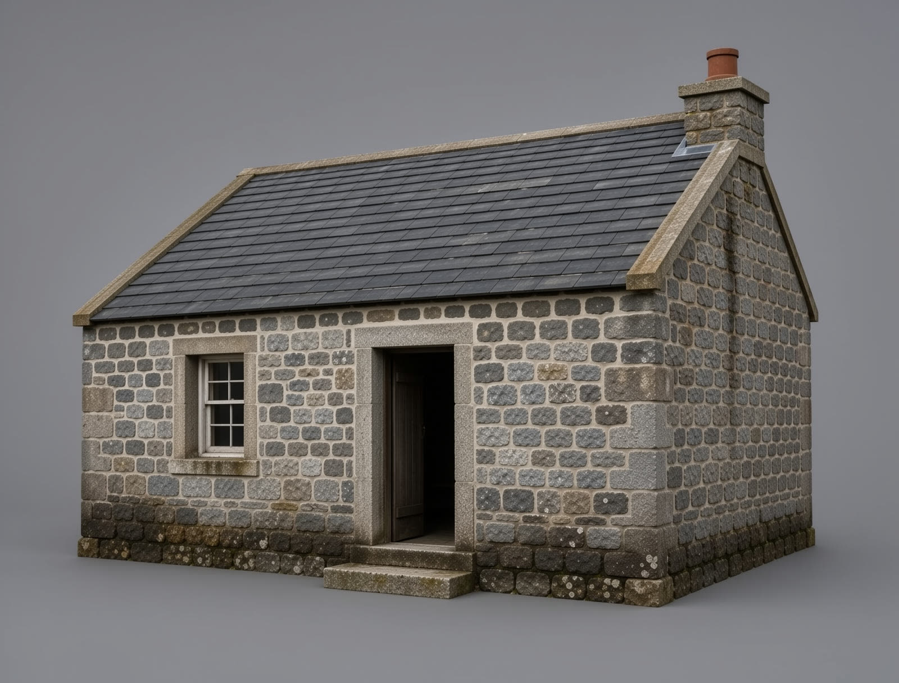
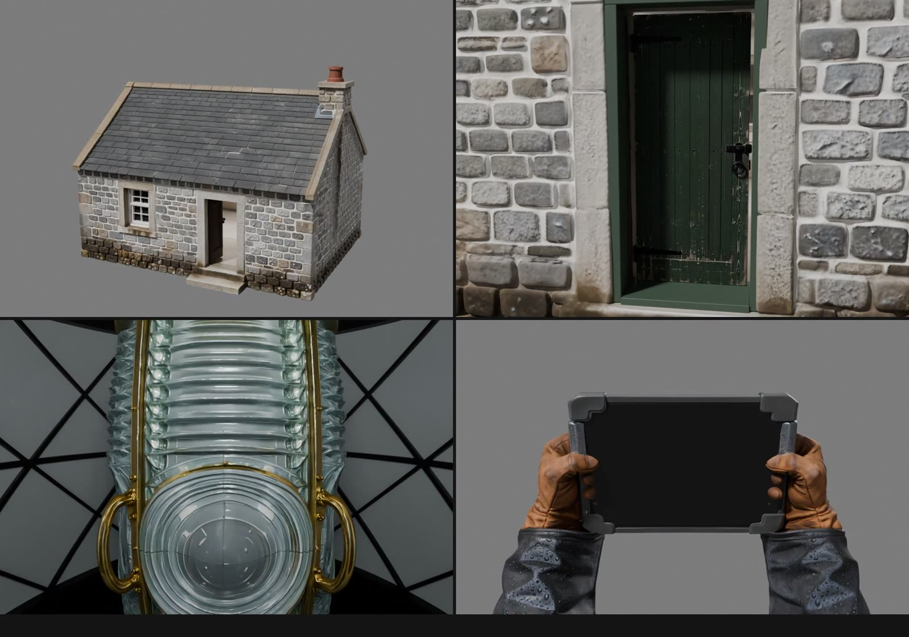
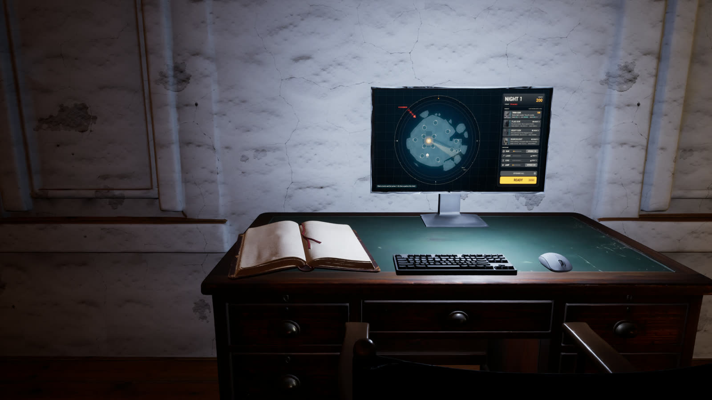
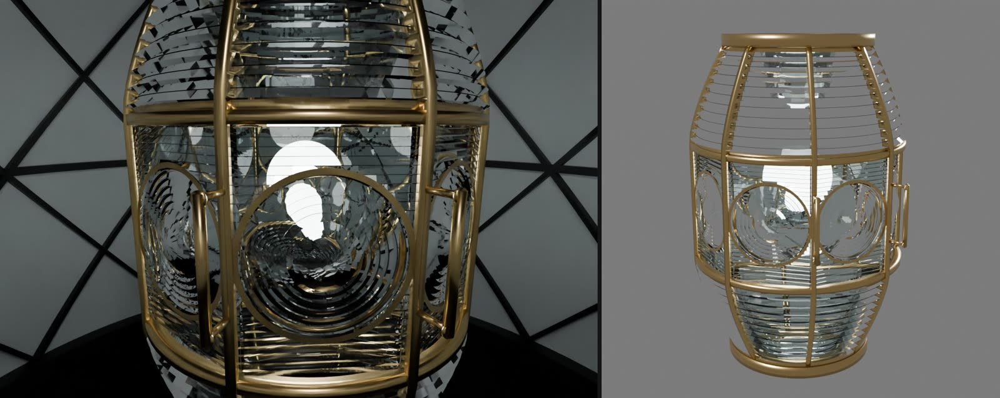
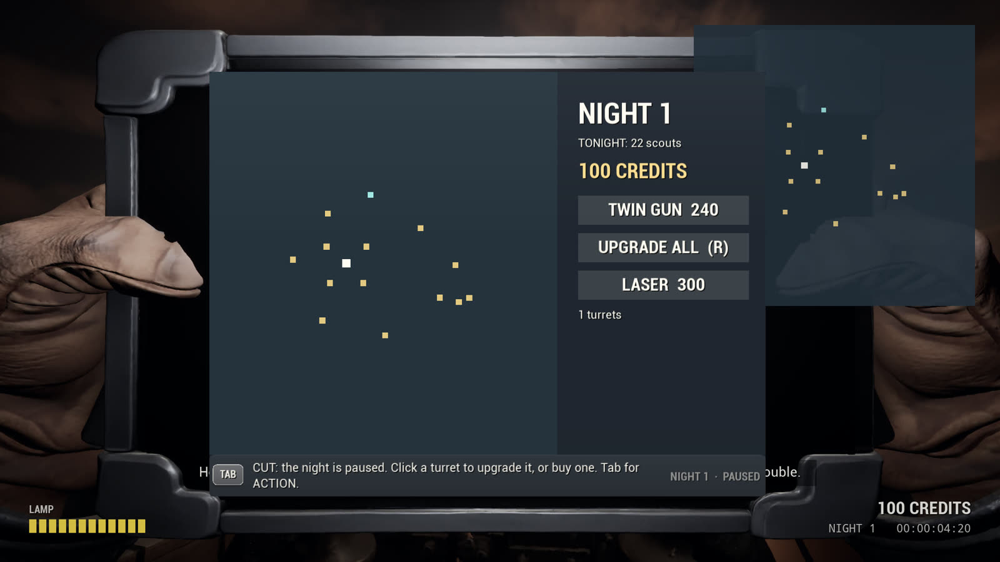
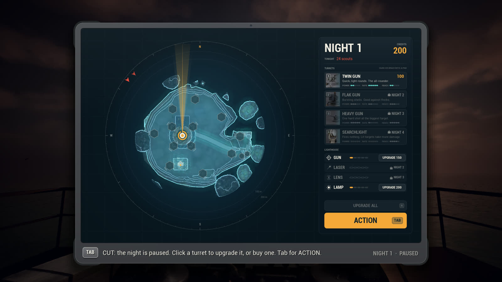

Day 2 Friday 13 November
Catching up, part one: the hut from Rodin, a lens sent back, the tablet, and the rules of the night
7 pictures 2 failures 10 min read
The rule for this log is an entry at least every three hours of work. The last one went out at 13:32, and nothing followed while ten lanes built most of the rebuilt game. The developer noticed. These three entries were written afterwards, at about 17:40, from the lanes' own records: their notes, the boards where they post faults and requests, the Rodin job list and the history of the main branch. The clock times in them are the times those records give.
The keeper's hut, in models from our own pictures
The assets lane started at 12:57 with studio pictures from MOSS-Image: one object each on plain grey, four seeds each, every prompt ending in a list of what must not appear (text, logos, signs). Thirteen objects: the cottage, its door, a desk, a monitor, a keyboard, a mouse, a PC tower, a bunk, an open logbook, a shelf, a rugged tablet, the tablet held in gloved hands, and the lighthouse's great Fresnel lens. The lane picked one seed of each, saved it again without its metadata, and sent it to Rodin Gen-2.5 High with a short text. Sixteen jobs went out between 12:59 and 13:19; most came back within a quarter of an hour.


PromptAn old lighthouse keeper's cottage from the 1920s as a single small building on its own, seen from a three-quarter view from the front left…250 words
An old lighthouse keeper's cottage from the 1920s as a single small building on its own, seen from a three-quarter view from the front left at a slightly raised eye level: one storey, about six metres long and four and a half metres deep, three metres to the eaves. Thick walls of rough grey granite rubble stone laid in lime mortar, weathered and salt-stained, the stones darker and damp at the foot. A steep pitched roof of small dark grey slate tiles with a plain stone ridge and a narrow eave. A square stone chimney stack at the right gable end with one short clay chimney pot. In the middle of the long front wall a deep stone doorway with a heavy granite lintel, the door standing wide open inward so the doorway is an empty dark opening; left of it one small deep-set window with a white-painted wooden frame of small panes, its glass dark. A worn stone threshold step. The building is cut off flat at the ground, standing on nothing. The whole building in frame with clear space around it, on a seamless plain mid-grey studio background, soft even diffuse studio lighting from all sides, no dramatic lighting, no cast shadow on the background, no ground, no grass, no path, no fence, no sea, no sky, no people, no other objects, photorealistic architectural photograph, natural colour, sharp. No text, no letters, no numbers, no house number, no logos, no brand names, no signs, no plaques, no markings.
The text that went to Rodin with that picture, under the four models it made first:
PromptAn old one-storey lighthouse keeper's cottage, 6 m long, 4.5 m deep, 3 m to the eaves: thick grey granite rubble walls in lime mortar,…101 words
An old one-storey lighthouse keeper's cottage, 6 m long, 4.5 m deep, 3 m to the eaves: thick grey granite rubble walls in lime mortar, darker and damp at the foot; a steep pitched roof of dark grey slate with stone-capped gables; a square stone chimney stack with a clay pot at the right gable; a deep stone doorway with a granite surround, its door open inward so the doorway is a dark opening; a small white sash window in a granite surround; a stone step at the door. Cut off flat at the ground. No text, no signs, no markings.


The cottage was the pleasant surprise: Rodin built it hollow, with a real room 4.8 by 6.3 metres behind the doorway, so the keeper's room is inside the model itself rather than a set behind a facade. The hut lane hid the old supply shed it replaces and furnished the room in code: the desk on the back wall between the windows, the monitor on it, a canvas chair, the bunk along the gable, the shelf, a stove. The room's lights touch only the room, so the storm's light does not shine through the walls and the screen's glow does not leak out. At the desk the camera pushes into the monitor in 1.2 seconds and the plan takes the whole screen.
In a second round from 15:14 Rodin made eight more things for the room (an oilskin coat on its pegs, sea boots, a valve radio that now hisses on the desk, an enamel mug, a row of books, a wall clock, a stack of logbooks, a kitchen chair) and thirteen for the rock outside: a rain barrel, coils of rope, fuel drums, crates, a wheelbarrow, lobster pots, a bench, a mooring bollard, a rowing boat on its slipway, the ship's bell by the tower door. A small planner of the lane's own puts each piece on the islet's real heights, clear of the turret pads, the path and the camera's lines; fifteen pieces stand on the rock now. The developer looked at the furnished hut with the plan on its monitor at 16:39 and approved it.


Rodin's count for the day so far: 47 jobs on Friday (17 models and 4 rigs before 14:20, 21 for the room and the rock, 3 for the lane that refines the look, 2 for the tower door at 17:19), at about half a credit a model. Every job is listed with its picture, its text and its time in the entry's records.







CUT, the tablet, and a guide that watches the game
The tablet lane's work went in at 14:27. Tab stops the night completely: the picture holds as a still, its colour down to 45 percent with a dark edge, "CUT!" lands with a clapper's snap, and in 0.28 seconds the tablet comes up with the same plan as the hut's monitor. Everything on it works. Tab again, "ACTION!", and the night rolls on from the same frame.
The guide is the design's 22 lines, written as a small machine that watches the game itself: kills, the barrel's heat, the lamp being hit, a harvester within 450 metres, a carrier within 1.1 kilometres, the mothership's shield. So no other part of the game has to report to it. One line at a time; each outlines what it means (a turret card, READY, tonight's arrows, a saucer bracketed in the sky, or a chevron at the screen's edge when it is out of view), and leaves when the player has done it or after 12 seconds. The hut's first lines are the one exception: they wait for the player, because nothing in the hut runs on a clock. H hides the guide. In a bot run over the first two nights, lines 5 to 11 and line 15 came up by themselves at the right moments.
The rules of the night
The battle lane's economy went in at 15:12, with every number from the design in one place and every night from 1 to endless made in code:
| Turret | Price | What it does | Sold from |
|---|---|---|---|
| Twin Gun | 100 | quick, light rounds | Night 1 |
| Flak Gun | 175 | a burst every 2.5 s that hits everything within 10 m | Night 2 |
| Heavy Gun | 250 | one 500-point shot every 2.5 s at the biggest target | Night 3 |
| Searchlight | 150 | fires nothing; what it lights takes 35% more damage | Night 4 |
Each level adds 40 percent damage, and selling gives back everything spent. A kill's bounty grows by a tenth each night, and a night held pays 100 credits times its number. The big ships were tuned against the stopwatch with the bot at the gun: a harvester falls in about five seconds to the gun and two turrets; a carrier has 2,000 points of hull and six launch bays that each take a seventh of it, so the bays are the quick way down; the mothership loses its four towers, then its core, then the laser cuts it in two, 38 seconds after the first hit in the bot's run (the design asks for 25 to 40). Nights 1 to 4 are written by hand; from Night 5 the game writes each night from a seed: two to four sides of the sea, more scouts each night, a carrier every fourth night from Night 6, a mothership every fourth night, three of them on Night 20, then endless nights each 12 percent harder.
Two runs check that Night 1 is a real night: with nobody at the gun and two twin guns placed, the turrets alone held it in 85 seconds; with nothing at all, the lamp went dark after about 70 seconds and the game came back to the hut on TAKE 2 with exactly 200 credits and no turrets, as at READY.
The thirty honours replace the first version's sixty-four achievements. They pay nothing, so no one has to hunt them for credits. Five got new names because the phrase was also a well-known title ("No Room Left" and "By a Thread" are two of the new ones), and two are hidden. The run's score is the bounties as paid plus, for every night held, 100 times the night's number times the share of the lamp left; a lost take adds nothing.